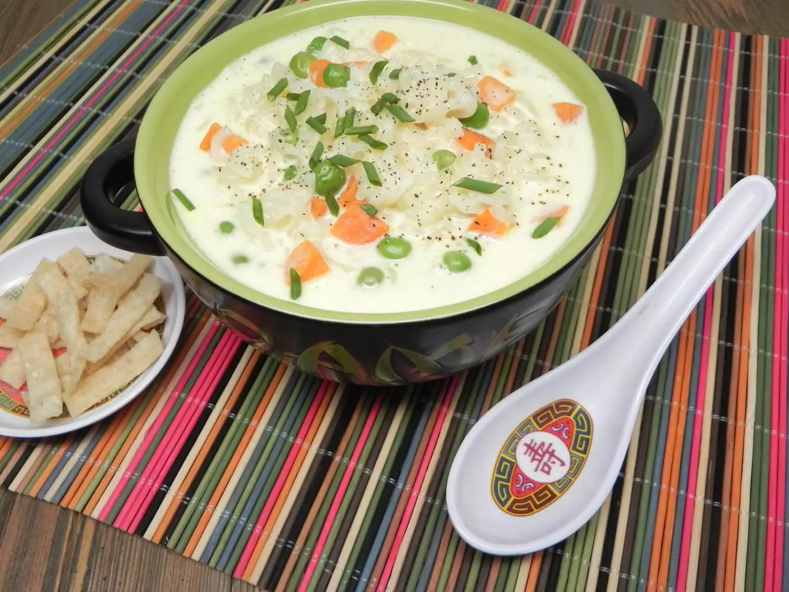

Description
Spruce up that instant chicken ramen by adding actual protein and veggies that yields a creamy broth. This is my take on instant ramen/egg drop soup. Top with chopped chives and crispy wonton strips if desired. They are sold as a salad topping and can be found with croutons.
Ingredients
- 1 (3 ounce) package chicken flavored ramen noodles
- 2 cups water
- ½ cup frozen peas and carrots
- 1 large egg
- 2 tablespoons mayonnaise
Steps
- Break up noodles and place in a microwave safe bowl. Add water and frozen veggie mix. Microwave on high 7 minutes.
- Meanwhile whisk egg, mayonnaise, and season packet from the instant ramen together in a large bowl.
- Temper egg mixture by ladling 1/4 cup of the boiling water from the noodles, whisking until combined. Ladle another 1/4 cup of the boiling water whisking until egg is "cooked" and completely incorporated.
- Add remaining liquid and the noodles. Let sit until the noodles have absorbed the majority of the liquid, about 3 minutes.
- Ladle into 2 serving bowls and serve immediately.